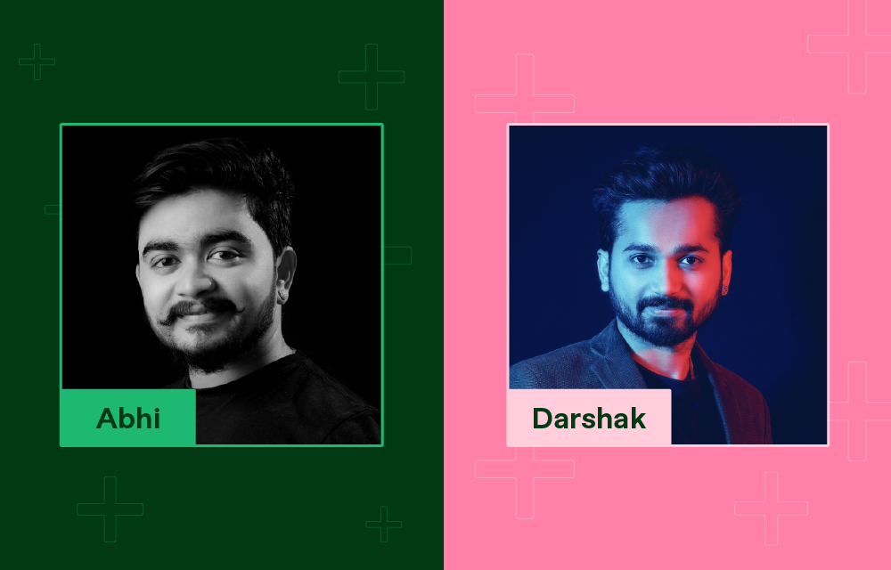

By Andy Voloschin | March 16,2023
It all began in 2005, when 8th grade classmates Darshak and Abhi realized they were neighbors. They were friends after just one day.
After graduating in 2014, they headed to Melbourne, Australia to pursue their tertiary education together. But before they left, Darshak decided to try out new freelancing platforms. When Fiverr began to feel like his miracle, he recommended that Abhi try the same.
Today, they are 6-figure top sellers in Fiverr’s busiest category: Logo Design. Even though they work with different agencies, they’re always ready to help and support each other.
1) Would you mind sharing your experience of how you hired your first employee?
Darshak: Initially in 2016, just after I made a decision to try Fiverr full time, I started getting more orders that I alone couldn’t manage. An idea was triggered in my mind that an extra pair of hands could process more orders and assist me in the designing areas. With that in mind, I hired my first employee from my city and he is now the Head of the Graphic Design department in my agency.
Abhi: After completing several orders and gathering a few pools of buyers, I wasn't able to manage the work alone. At that time, I thought about hiring an employee.
2) What was the trigger that helped you make such a decision?
Darshak: As I shared earlier and to convert my part-time freelancing to a full-time agency, I knew I'll need a bigger workforce beside me. It was simple math: the bigger the team, the better the results!
weperfectionistDarshak (from India), enthusiastic and creative graphic artist who is passionate about Logo and Banner Design.
Joined Fiverr on Dec 2015 , and enrolled in Seller Plus on Feb 2021
Mrtranscendence